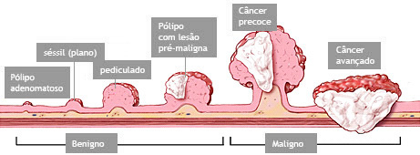
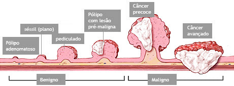
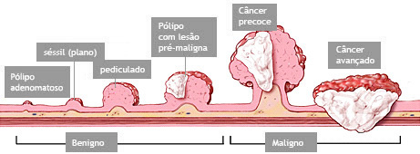

O Cancer de Colon é um tumor que se desenvolve no intestino grosso, chamado também de câncer do cólon e do reto. É uma doença que pode ser prevenida, pois quase sempre se desenvolve a partir de pólipos, que são lesões benignas que crescem na parede do intestino. Quando o pólipo é retirado evita-se que ele se transforme em câncer.
QUAIS OS SINTOMAS DO CANCER DE COLON?
Os sintomas mais comuns são:
Presença de sangue nas fezes.
Dores abdominais.
Dores ao evacuar.
Diarreia ou prisão de ventre que não passam.
Sensação de empachamento.
Mudanças no apetite.
Perda de peso inexplicável.
OQUE PODE CAUSAR O CANCER DE COLON?
Má alimentação - há evidências de que o câncer de cólon e de reto está associado a dietas gordurosas, hipercalóricas, pobres em fibras e com excesso de carne vermelha e/ou processada.
COMO IDENTIFICAR O CANCER DE COLON?

Sangue nas fezes.
Mudança do hábito intestinal.
Dor ou desconforto abdominal.
Alteração na forma das fezes (fezes no formato de fita, achatadas, muito finas e compridas ou em pequenos pedaços)
Fraqueza e anemia.
Perda de peso sem causa aparente.
Massa (tumoração) abdominal.

 
